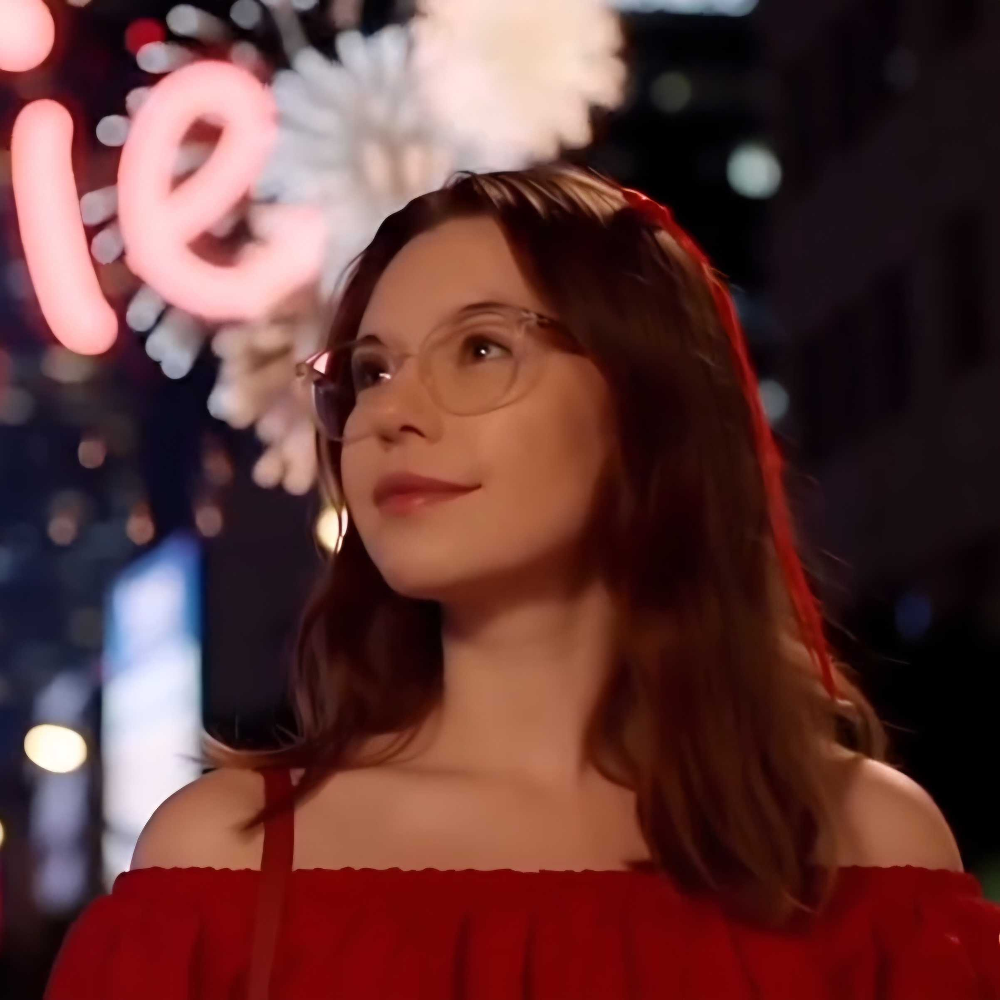

Welkom op mijn portfolio site!🎉
Ontdek hier meer over mij en mijn avonturen.
Dit is mijn eerste portofolio gemaakt met HTML, CSS en Javascript.
Deze portfolio bevat geen AI kunsten alles is met mijn eigen 10 vingers digitaal geknutselt.
Op de pagina over mij lees je meer over wie ik ben.
Op de pagina projecten kan je mijn projecten bekijken.
Op de pagina contact kan je contact met mij opnemen.
Kijk gerust rond
Veel plezier💚
